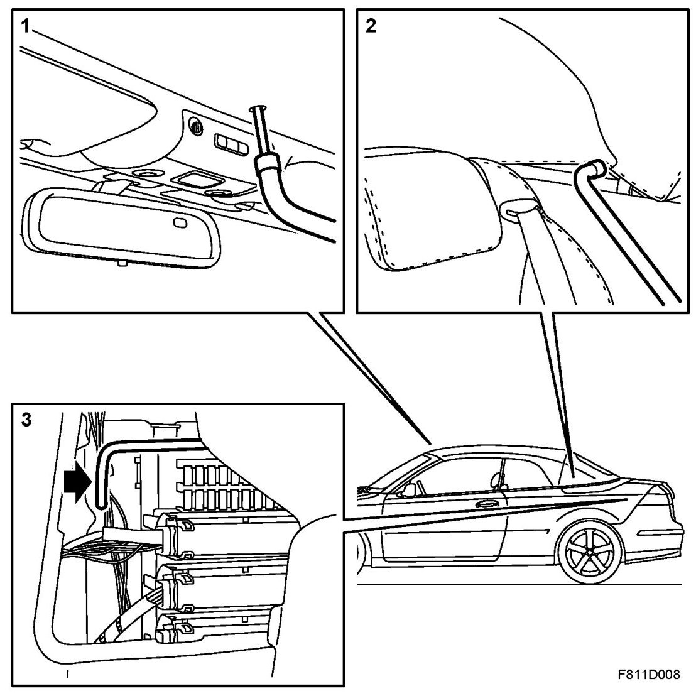
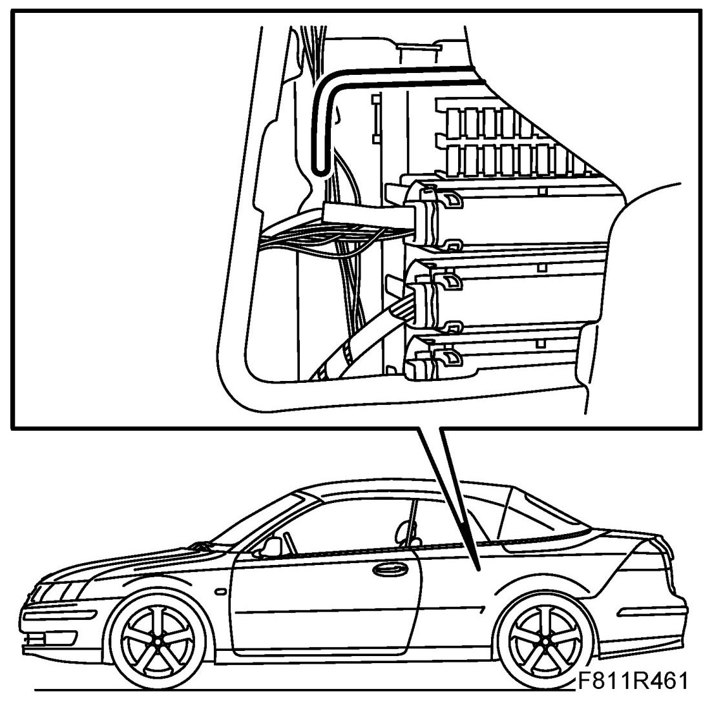
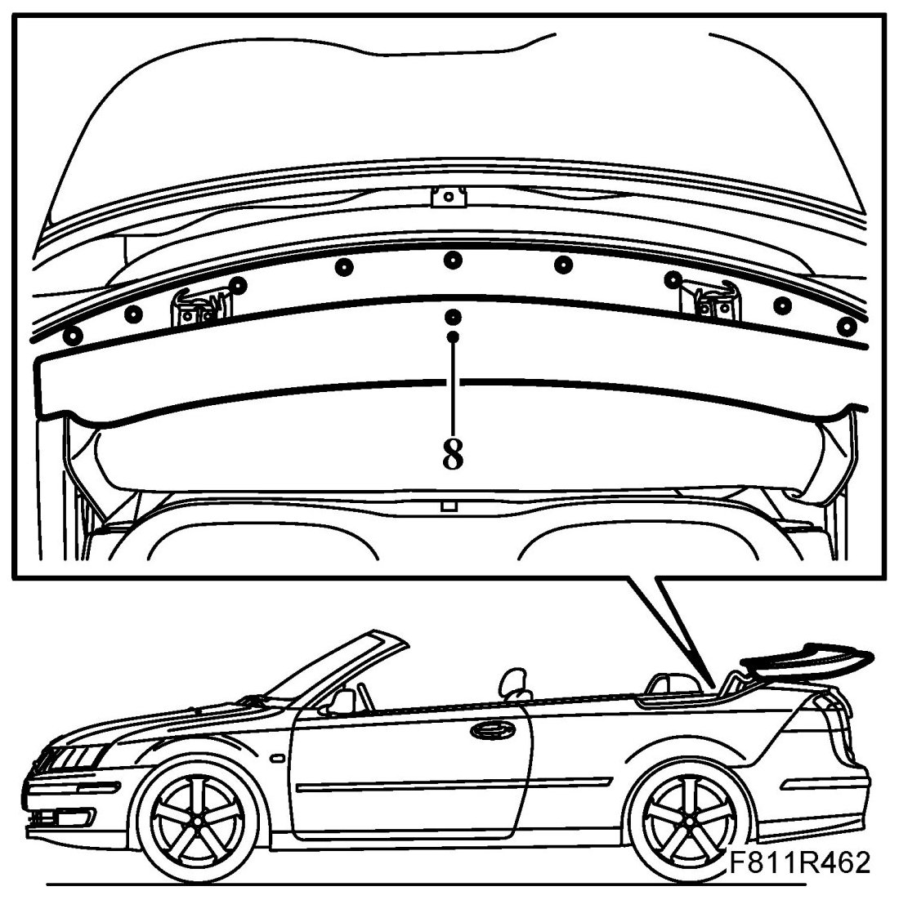
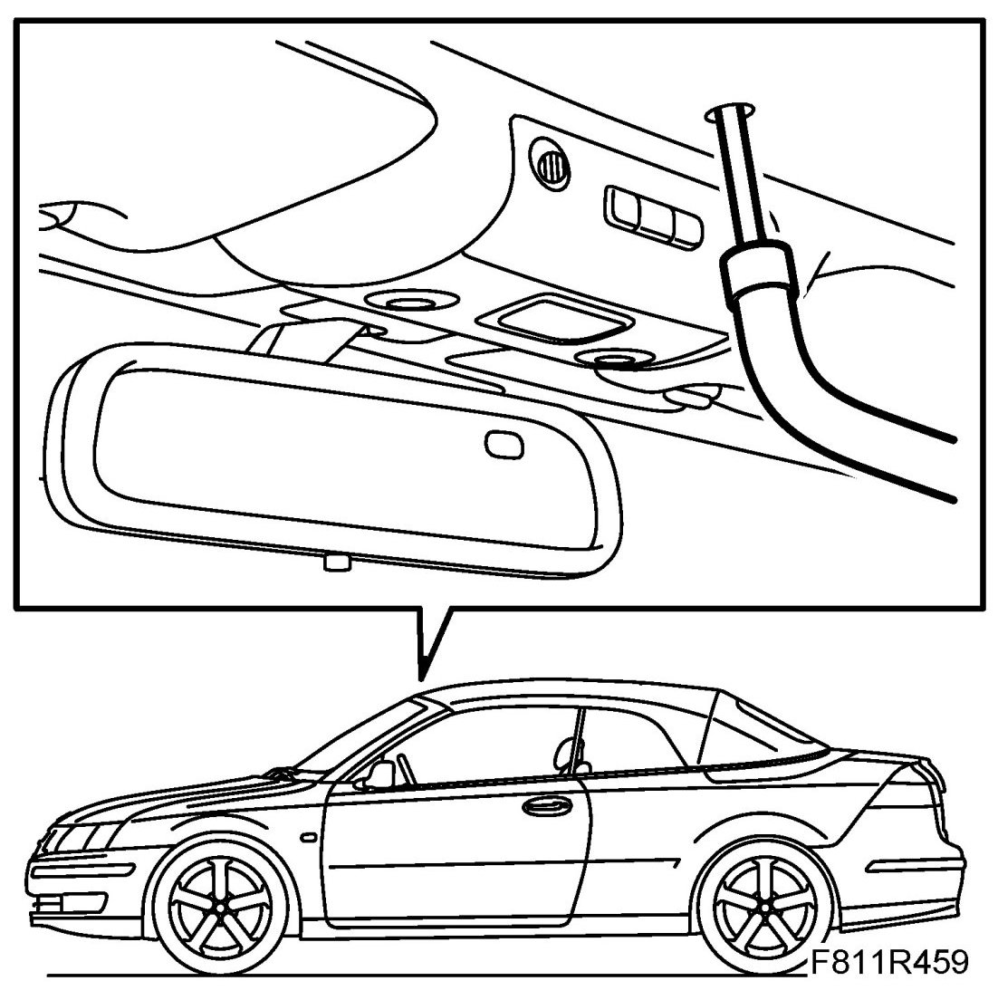
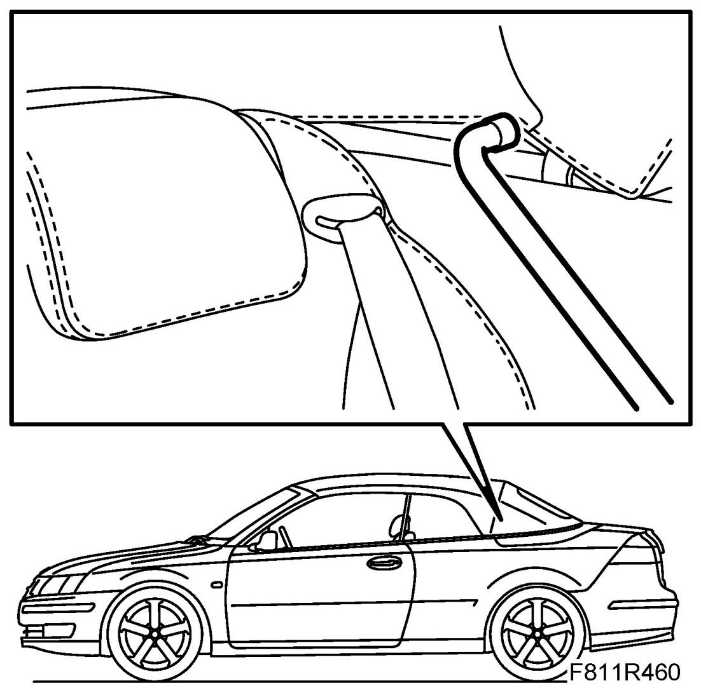
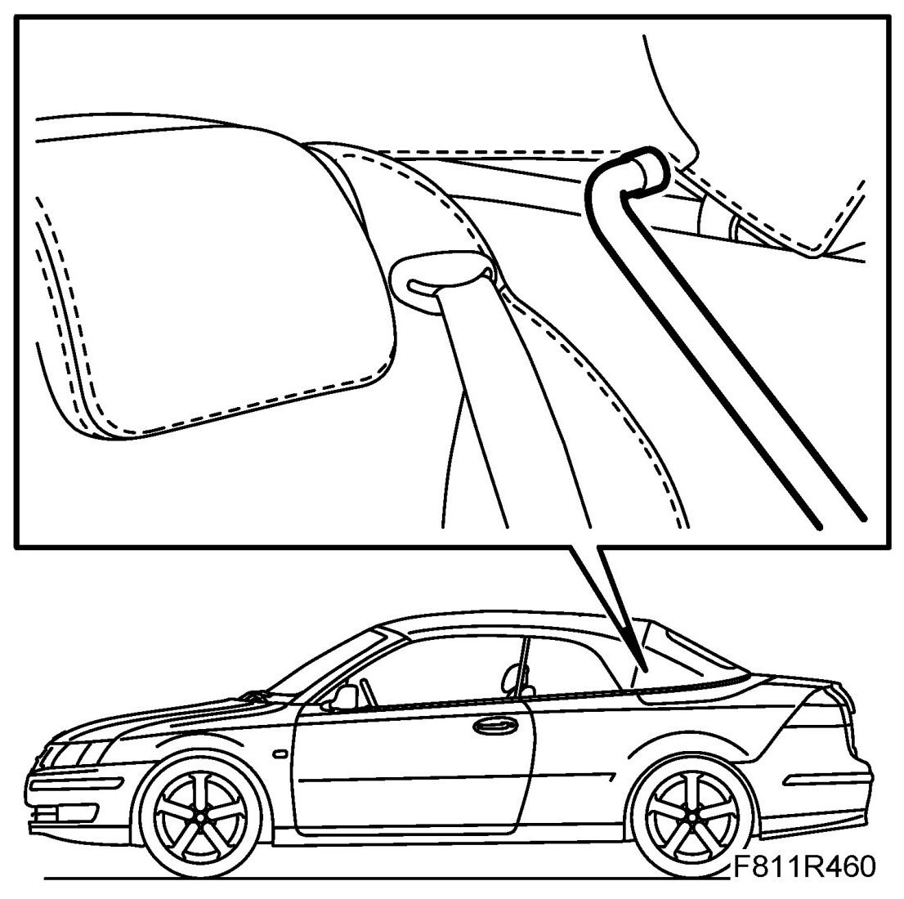
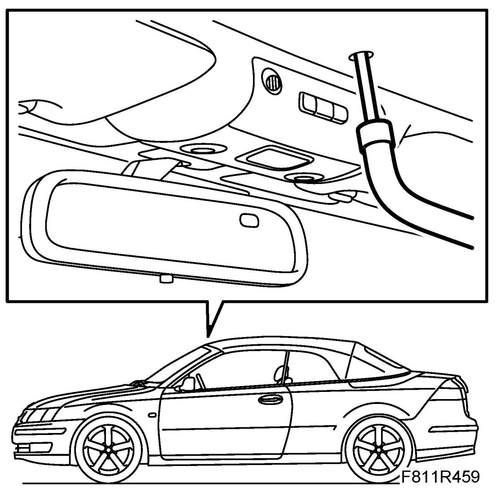
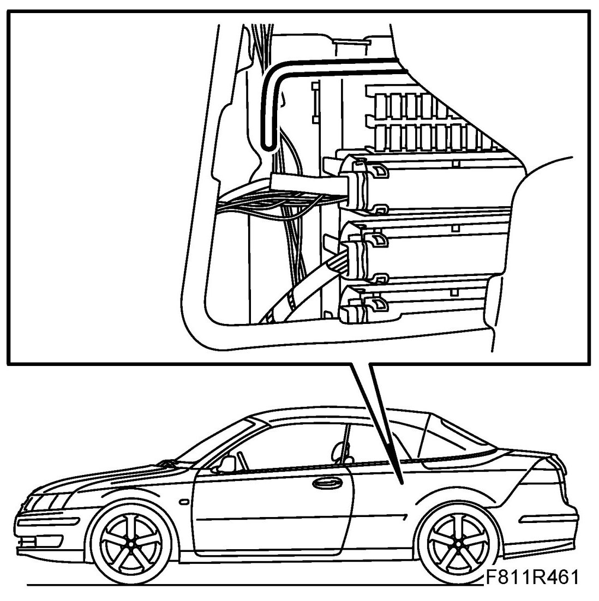

Emergency Operation
Emergency Operation
Description
1. Unlocking the first bow

2. Emergency operation of sixth bow on right and left-hand side
3. Emergency operation of soft top cover on right and left-hand side
The soft top system has an emergency operation function in order to raise the soft top in case of a fault in the system.
The rods for emergency operation are located to the left and right behind the luggage compartment trim. For access, the cover for changing bulb must first be removed. To unlock the soft top cover, the emergency operation rods must be pushed (3) forward.
To lock and open the first bow, the lock must be turned using an Allen key and wheel nut wrench (included in the tool box) through the opening under the cover in the first bow trim (1).
To lock and open the sixth bow, the soft top mechanism must be turned (2) using an Allen key and wheel nut wrench (included in the tool box) on both sides. Fold up the headlining somewhat for access.
WARNING: If the soft top is released when half raised (standing straight up) there is a risk for crush injuries as it will fall down, either forward or backward depending on the centre of gravity.
Emergency closing
The soft top can be closed using emergency operation in the following way:
1. Open the boot lid. Take out the Allen key, screwdriver and wheel nut wrench (included in the tool kit).
2. Remove the luggage compartment cover at the rear lamps on the left and righthand side of the luggage compartment.
3. Release the soft top cover by pressing forward the left and right emergency operation clasps.

4. Close the boot lid
5. Lift the rear edge of the soft top cover and pull it back.
6. Fold forward the front seat backrests.
7. Stand on the rear seat.
WARNING: Do not touch the soft top hinge or rods when it is being raised. Do not touch the windscreen frame either, as there is a risk of crush injury. Do not operate the soft top while passengers are occupying the rear seat or when there is someone in the close vicinity of the car.
8. Remove the cover plug using a screwdriver. Unlock the lock hooks using the wheel nut wrench. Turn clockwise.

9. Lift the soft top and pull it towards the windscreen.
10. Make sure the lock hooks are against the windscreen frame. Lock the soft top against the windscreen frame. Use an Allen key and wheel nut wrench (included in the tool box) to turn anticlockwise.

11. Lift up the 6th bow and close the soft top cover.
IMPORTANT: The sixth bow must be completely raised when opening and closing the soft top cover to avoid damaging the paintwork on the soft top cover.
12. Lower the 6th bow as far as possible. Lift up the headlining somewhat and fit the tool into the soft top mechanism hexagonal hole. Press down the sixth bow against the soft top cover with the help of an assistant. Turn the tool to lock the sixth bow on the left and right-hand sides.
NOTE: The soft top cover cannot be locked when closing manually.

Emergency opening
The soft top can be opened using emergency operation in the following way:
1. Fold up the headlining somewhat.

2. Release the sixth bow by turning the Allen key and wheel nut wrench (included in the tool kit) on both sides.
3. Remove the side trim cover on the left and right-hand sides of the luggage compartment. Release the soft top cover by pressing forward the left and righthand emergency operation clasps. (This is not necessary if the customer has already performed emergency closing.)
4. Lift up the 6th bow.
IMPORTANT: The sixth bow must be completely raised when opening and closing the soft top cover to avoid damaging the paintwork on the soft top cover.
5. Lift the rear edge of the soft top cover and move it back.
6. Open the first bow lock hooks by turning the Allen key and wheel nut wrench (included in the tool kit) clockwise.

7. Lift the front of the soft top and lower is slowly backwards.
WARNING: Do not touch the soft top hinge and rods when it opens as there is a risk of crush injuries. Do not operate the soft top while there is a passenger in the rear seat or when there is anybody in the immediate vicinity of the car.
Resetting after emergency opening of soft top cover
1. Reset the emergency opening.

2. Fit the luggage compartment cover at the rear lamps on the left and right-hand side of the luggage compartment.
3. Replace the tools in the tool kit.